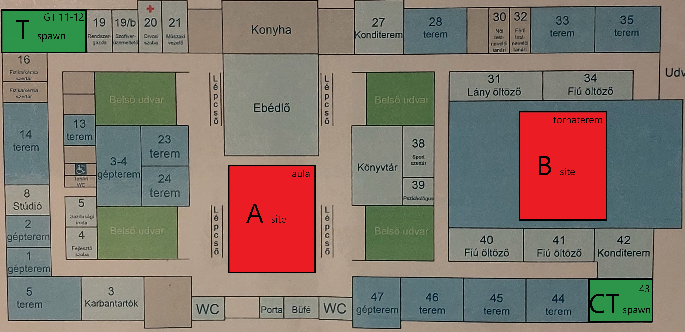

CS:GO - projekt
CS:GO az egyik legnépszerűbb 5v5 lövöldözős csapatjáték. Megpróbáltuk összekötni a projektünket a CS:GO-val, ezzel is színesebbé téve a projektet. Tehát elkészítettük az iskola földszintjét, mint CS:GO map.
CS:GO - project
CS:GO is one of the most popular 5v5 competitive multiplayer games. We tried to connect the game with our project to make our project more colorful. So we put the Neumann map into the game.
